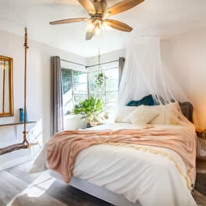
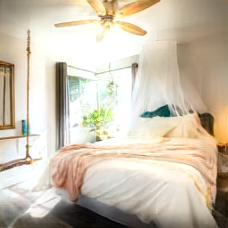
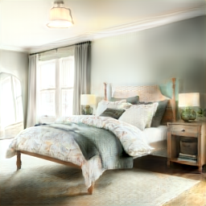
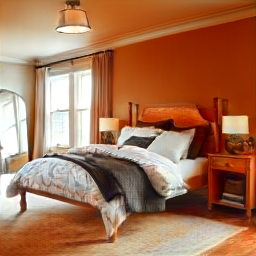
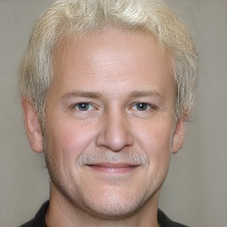
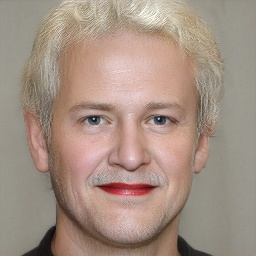
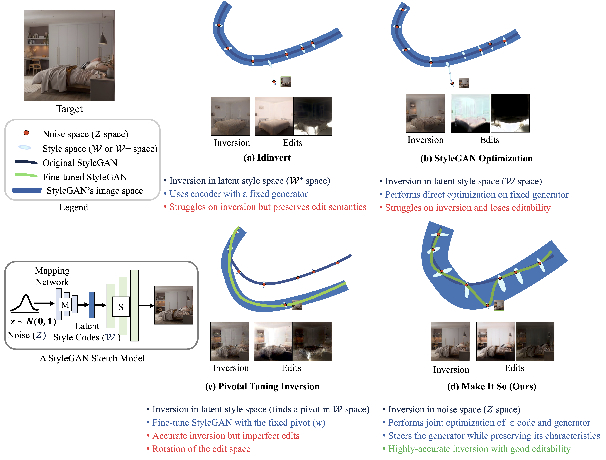

Abstract
StyleGAN's disentangled style representation enables powerful image editing by manipulating the latent variables, but accurately mapping real-world images to their latent variables (GAN inversion) remains a challenge. Existing GAN inversion methods struggle to maintain editing directions and produce realistic results.
To address these limitations, we propose Make It So, a novel GAN inversion method that operates in the Z (noise) space rather than the typical W (latent style) space. Make It So preserves editing capabilities, even for out-of-domain images. This is a crucial property that was overlooked in prior methods.
Our quantitative evaluations demonstrate that Make It So outperforms the state-of-the-art method Pivotal Tuning Inversion by a factor of five in inversion accuracy and achieves ten times better edit quality for complex indoor scenes.
Qualitative Results
 |
 |
 |
 |
 |
 |
||
| Target Image | Make It So | Edit-1 (Relighting) | Edit-2 (Recoloring) |
Inversion and Editing of Complex Indoor Scenes
 |
 |
||
| Target Image | Make It So | Edited | Edited |
Inversion and Editing of Faces
Differences between Make It So and Previous Methods
